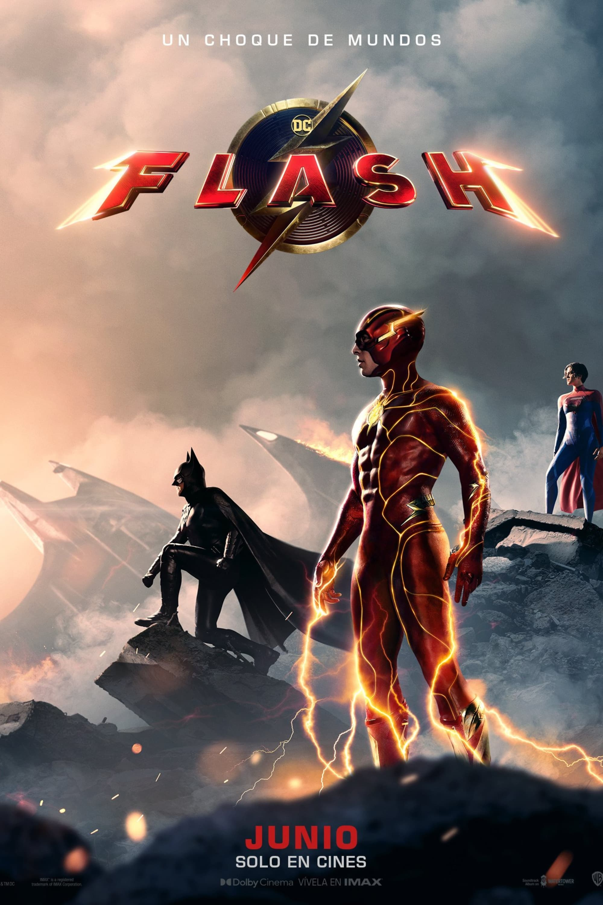
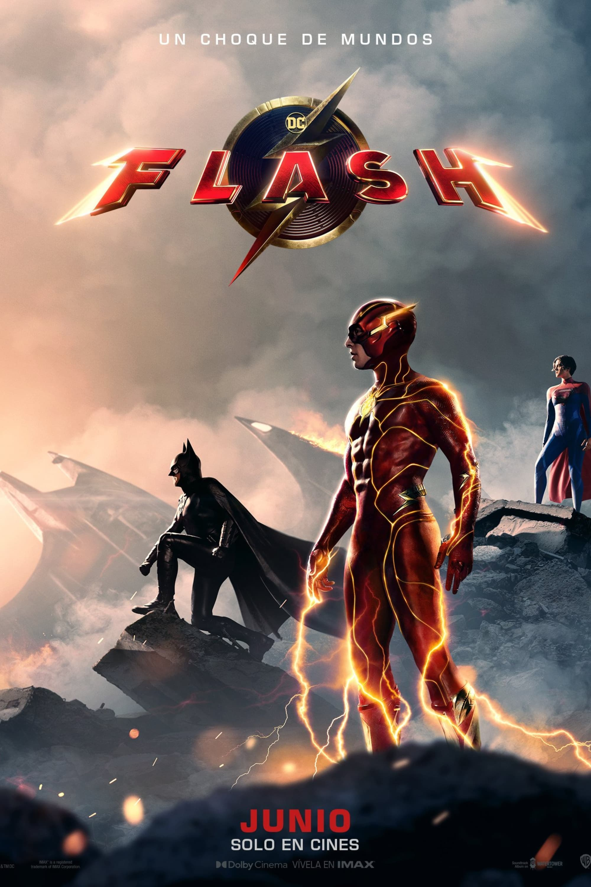

Flash es un superhéroe de DC Comics conocido por su habilidad única: la super velocidad. El personaje más común asociado con el nombre es Barry Allen. Después de ser alcanzado por un rayo y expuesto a productos químicos, Barry obtiene el poder de correr a velocidades extraordinarias. Utiliza sus habilidades para combatir el crimen, proteger a la ciudad y enfrentarse a villanos que amenazan la paz. Su traje distintivo es rojo y amarillo, y es miembro destacado de la Liga de la Justicia, un grupo de superhéroes de DC que trabajan juntos para proteger el mundo.

Somos una página web temática sobre el superheroe Flash
Aqui iremos subiendo actualizaciones y noticias
Disfruta y pasatelo bien :D

 


Como Barry Allen

Como Zoom

Como Ralph
Como Catylin Snow

Como Nora Allen